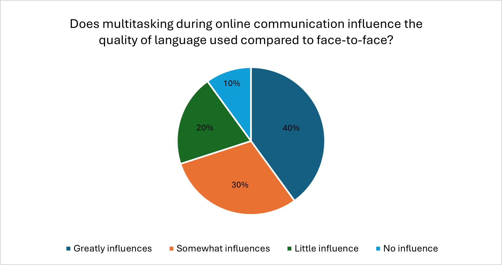

<!DOCTYPE html>
<html lang="en">
<head>
    <meta charset="UTF-8">
    <meta name="viewport" content="width=device-width, initial-scale=1.0">
    <title>LT3210 Final Project</title>
    <style>
        .bigtitle{
        background: lightsteelblue;
        text-align: center;
        margin-bottom: 30px;
        font-size: 30pt;
        padding: 30px;
        color: black;
        border-radius: 20px;
        box-shadow: 0 2px 3px rgba(0,0,0,0.1);
    }
        .analysis{
        background: rgb(220, 247, 242);
        margin-bottom: 10px;
        font-size: 20pt;
        padding: 20px;
        color: black;
        border-radius: 20px;
        box-shadow: 0 2px 3px rgba(0,0,0,0.1);
    }
        .analysis1{
        background: rgb(220, 247, 242);
        font-size: 13pt;
        margin-bottom: 20px;
        padding: 30px;
        color: black;
        border-radius: 20px;
        box-shadow: 0 2px 3px rgba(0,0,0,0.1);
    }
        
    </style>
</head>
</html>
    <h1 class="bigtitle">LT3210 Final Project</h1>

    <body style="background-color: #F7F2ED;">


        <p class= "analysis" style="font-size: 22px;"> 4. Multitasking and Language Use </p>
    <br>
    <div style="display: flex; flex-wrap: wrap; justify-content: center; gap: 20px;">
    <div style="text-align: center;">
    
    </div>

</div>
    <br>
    <p class= "analysis1">LLMs generally agreed that multitasking (Question 20) indeed affect the quality of language in both online and offline communication. Most models selected the options whereby multitasking influences the language “greatly” or “somewhat”, accounting for 40% and 30% respectively, nearly two-thirds of the total results. The LLMs’ tendency to believe that multitasking affects language quality is consistent with the finding that media multitasking between conversational tasks increases perceived task demands and leads to a small but measurable declines in performance (David et al., 2013). This implies they believe that online communication is more prone to distraction, leading to a decline in language quality (more errors, less coherence, or less politeness). To conclude, this demonstrates that LLMs, may view online communication as a domain with different interaction style, and that online communication is more susceptible to the effects of multitasking compared with face-to-face communication.  </p>

        <div class="popup-overlay" id="popupOverlay">
        <form action= "analysis5.html">
        <div class="popup" id="popup">
        <span class="close" id="closePopup">&times;</span>
        <p style="font-size: 19px;"> Do you get it? ? ? ? ? (Please answer yes/no)</p>
        <input type="yes/no" placeholder="Yes/No" style="font-size: 19px;">
        <button style="font-size: 19px;">Submit</button>
        </form>
    </div>
        
    
        <p><p1 style="font-size: 20px;"><a href="analysis3.html">Communication Quality and Barriers</a></p1><p2>&nbsp;&nbsp;(previous)</p2></p>
        <p style="font-size: 20px;"><a href="index.html">Main Page</a></p>